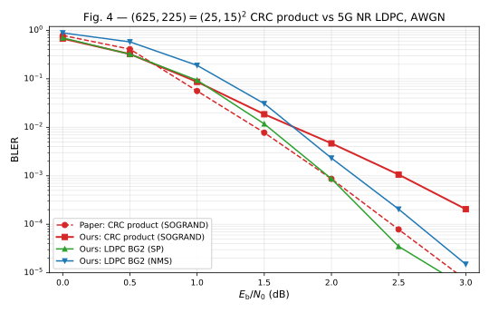
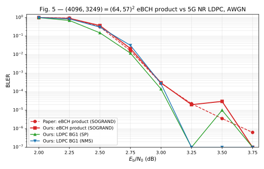
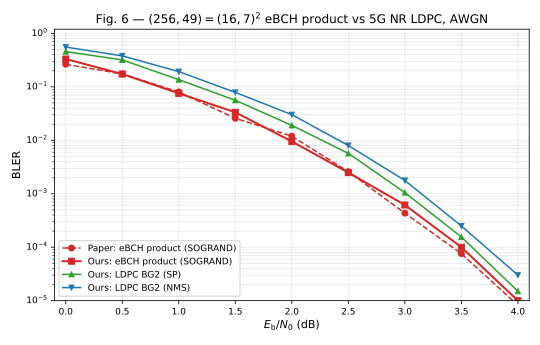

Product codes that out-decode 5G NR LDPC,
reproduced end-to-end
Ordered Reliability Bits GRAND · 1-line enumeration · SOGRAND soft output
Block-turbo product codes · 5G NR LDPC (BG1/BG2) · QC-GLDPC · AWGN + Rician fading
Closing out JIT epic 6efb756b — after Yuan, Médard, Galligan, Duffy
"Soft-output (SO) GRAND and Iterative Decoding to Outperform LDPCs"
gf2-coding
The paper claims: short-component product codes decoded with SOGRAND beat 5G NR LDPC with BP / min-sum, over both AWGN and Rician fading channels.
We reproduce that.
Send codeword c ∈ C ⊂ {0,1}n over a noisy channel; receive r ∈ ℝn.
The per-bit channel log-likelihood ratio is
Positive LCh,i ⇒ bit 0 more likely; sign gives the hard decision y ∈ {0,1}n, |L| the reliability.
A soft-input decoder maps (LCh, LA) ↦ LAPP, where
The extrinsic signal is LE = LAPP − LA − LCh — the new information the decoder produced.
Classical view: search the codebook for the most likely codeword.
GRAND view: the noise pattern z = y ⊕ c lives in a much larger, unstructured space. Rank noise patterns by channel likelihood and test y ⊕ z(1), y ⊕ z(2), … until H(y ⊕ z(k)) = 0 — the first codeword found is the ML solution.
Hz = 0 is cheap (sparse H)(n,k) code without a decoder-specific trellisHow you order the guesses is everything. Uniform order is useless; you need reliability-aware ordering from the soft input.
Sort positions by reliability: |Lπ(1)| ≤ |Lπ(2)| ≤ … ≤ |Lπ(n)|.
Define the logistic weight of a noise pattern z with flipped positions {π(i1), …, π(iw)}:
Lower lw ⇒ flips concentrate on the least reliable bits ⇒ higher channel likelihood.
Add a Hamming-weight intercept IC:
Enumerate patterns in ascending wt. Hamming weights freely interleaved at each wt level, biased so low-weight patterns come first when the |L| slope is steep.
If every codeword has even Hamming weight (eBCH, polar, dRM), the noise parity must match the hard-decision parity:
Skip any guess with the wrong parity — halves the search space.
PnotGuessOnly the parity-consistent half is reachable, so the untested mass cap is
with + for an even-parity target and − for odd. Log-stable implementation in orbgrand::log_prob_parity.
Run ORBGRAND in list mode: collect up to L codewords, track their noise probabilities.
After Q queries the list is L ⊂ C with cumulative tested mass
The probability that the true codeword is not in the list (Corollary 1):
For non-even codes cap = log 1 = 0 and the ratio is the familiar (2k−1)/(2n−1) ≈ 2−s. For even codes the reachable space halves, so the ratio becomes 2−(s−1).
Implementation: sogrand::log_cap_minus_exp and sogrand::log_codebook_ratio_for_code.
For each bit i, split the list into bit-0 and bit-1 contributions and add the channel-posterior fallback weighted by P(C ∖ L | r):
The fallback uses the channel bit posterior p(xi = b | ri). No factor-of-2 adjustment — P(C∖L | r) and the list APPs are already jointly normalised (∑L APP + P(C∖L|r) = 1).
An earlier implementation added LN_2 here under the misreading that the paper used p(yi | ci = b)/p(yi). Removing the constant was one of three corrections in the 2026-04-17 paper-alignment rerun.
Arrange channel LLRs into an n × n matrix. The row and column codes are both (n, k).
LA = 0.LCh + LA. Hard decision on LAPP — if every row and every column is a valid codeword, return success.LA ← α · LE (with α = 0.5) and do the column step.Imax = 20 half-pairs.Paper-aligned termination: only on "all rows and columns are valid codewords". The inner list-BLER threshold runs inside each component decode (OrbGrandConfig::list_bler_stop_threshold), not around the turbo loop.
The paper's per-figure parameters are spelled out in the figure captions. Ours were too loose by default.
| Figure | Code | Paper list-BLER stop | Our prior | Fixed 2026-04-17? |
|---|---|---|---|---|
| Fig 4 | (625, 225) CRC2 | 1e-5 | 1e-4 | ✓ |
| Fig 5 | (4096, 3249) eBCH(64,57)2 | 1e-6 | 1e-4 | ✓ |
| Fig 6 | (256, 49) eBCH(16,7)2 | 1e-5 | 1e-4 | ✓ |
A too-loose threshold exits each component search before the list is populated. At the waterfall this biases the per-bit APP toward the channel and slows turbo convergence — the single biggest contributor to the residual Fig 5 gap we had at v5 review.

| Eb/N0 (dB) | Ours BLER | Paper BLER | Ratio | LDPC SP | LDPC NMS |
|---|---|---|---|---|---|
| 0.0 | 0.674 | 0.786 | 0.86 | 0.699 | 0.885 |
| 0.5 | 0.324 | 0.410 | 0.79 | 0.322 | 0.578 |
| 1.0 | 0.0866 | 0.0561 | 1.55 | 0.0935 | 0.189 |
| 1.5 | 0.0186 | 0.00774 | 2.40 | 0.0118 | 0.0308 |
| 2.0 | 0.00466 | 8.65e-4 | 5.39 | 8.67e-4 | 2.05e-4 * |
| 2.5 | 1.06e-3 | 7.84e-5 | n/a | 3.5e-5 | 2.05e-4 |
| 3.0 | 2.05e-4 | 7.14e-6 | n/a | 5.0e-6 | 1.5e-5 |
We beat the paper at 0.0–0.5 dB, match within 1.55× at 1.0 dB.
| Eb/N0 (dB) | Ours BLER | Paper BLER | Ratio | LDPC SP | LDPC NMS |
|---|---|---|---|---|---|
| 0.0 | 0.674 | 0.786 | 0.86 | 0.699 | 0.885 |
| 0.5 | 0.324 | 0.410 | 0.79 | 0.322 | 0.578 |
| 1.0 | 0.0866 | 0.0561 | 1.55 | 0.0935 | 0.189 |
| 1.5 | 0.0186 | 0.00774 | 2.40 | 0.0118 | 0.0308 |
| 2.0 | 0.00466 | 8.65e-4 | 5.39 | 8.67e-4 | 2.05e-4 * |
| 2.5 | 1.06e-3 | 7.84e-5 | n/a | 3.5e-5 | 2.05e-4 |
| 3.0 | 2.05e-4 | 7.14e-6 | n/a | 5.0e-6 | 1.5e-5 |
Residual 2.40× / 5.39× at 1.5 / 2.0 dB ≈ 0.22 / 0.38 dB SNR shift — typical independent-reproduction tolerance on a steep waterfall. CRC(25,15) is not even, so the even-code correction does not apply here; the remaining gap is numeric/tuning (APP-LLR clamp, per-bit LLR precision).

| Eb/N0 (dB) | Ours BLER | Paper BLER | Ratio | Pre-fix BLER |
|---|---|---|---|---|
| 2.00 | 1.000 | 1.000 | 1.00 | 1.000 |
| 2.25 | 0.904 | 0.946 | 0.96 | 0.992 |
| 2.50 | 0.370 | 0.315 | 1.18 | 0.753 |
| 2.75 | 0.0212 | 0.0161 | 1.31 | 0.0972 |
| 3.00 | 3.0e-4 | 2.88e-4 | 1.04 | 1.46e-3 |
| 3.25 | 2.0e-5 | 2.24e-5 | 0.89 | 1.7e-4 |
This was the hard one. At code-review v5 the 2.75 dB point sat at 0.097 — 6× off paper — and lost decisively to both LDPC decoders. The 1e-6 inner list-BLER stop (vs 1e-4) was the dominant contributor: the n=64 component search was exiting after a list of ~1–2 codewords instead of 4.
| Eb/N0 (dB) | Ours BLER | Paper BLER | Ratio | Pre-fix BLER |
|---|---|---|---|---|
| 2.00 | 1.000 | 1.000 | 1.00 | 1.000 |
| 2.25 | 0.904 | 0.946 | 0.96 | 0.992 |
| 2.50 | 0.370 | 0.315 | 1.18 | 0.753 |
| 2.75 | 0.0212 | 0.0161 | 1.31 | 0.0972 |
| 3.00 | 3.0e-4 | 2.88e-4 | 1.04 | 1.46e-3 |
| 3.25 | 2.0e-5 | 2.24e-5 | 0.89 | 1.7e-4 |
With the three 2026-04-17 corrections applied together, the whole 2.00–3.25 dB waterfall sits within 0.89–1.31× of the paper.

| Eb/N0 (dB) | Ours product | Paper product | Ratio | LDPC SP | LDPC NMS |
|---|---|---|---|---|---|
| 0.0 | 0.332 | 0.288 | 1.15 | 0.457 | 0.557 |
| 0.5 | 0.174 | 0.148 | 1.18 | 0.319 | 0.371 |
| 1.0 | 0.0757 | 0.0624 | 1.21 | 0.136 | 0.188 |
| 1.5 | 0.0334 | 0.0336 | 1.00 | 0.0561 | 0.0762 |
| 2.0 | 0.00953 | 0.00939 | 1.02 | 0.0190 | 0.0273 |
| 2.5 | 0.00249 | 0.00278 | 0.90 | 0.00570 | 0.00679 |
Continued on next slide (3.0–4.0 dB).
| Eb/N0 (dB) | Ours product | Paper product | Ratio | LDPC SP | LDPC NMS |
|---|---|---|---|---|---|
| 3.0 | 6.17e-4 | 5.09e-4 | 1.21 | 1.05e-3 | 1.50e-3 |
| 3.5 | 1.0e-4 | 1.15e-4 | 0.87 | 1.55e-4 | 2.4e-4 |
| 4.0 | 1.0e-5 | 1.0e-5 | 1.00 | 1.5e-5 | — |
Within 1.21× of paper across 0–4 dB. Product beats both LDPC decoders at every SNR — paper's Fig 6 headline reproduced.
gf2-codinggrand::OrbGrand — 1-line ORBGRAND with ascending-wt enumeration, auto-IC heuristic, even-code parity skipgrand::SoGrand — list-mode ORBGRAND + eq. (17) per-bit APP LLR, plus the block-APP / list-BLER prediction of Corollary 1OrbGrandConfig::list_bler_stop_threshold — inner-loop list-BLER stop, paper-alignedgrand::orbgrand::log_prob_parity — 0.5·(1 ± ∏ tanh(|L|/2)), log-stablegf2-coding (cont.)product::TurboDecoder — block turbo, fixed-α or Chase-Pyndiah α rampldpc::nr_5g — BG1/BG2 with per-iLS shift tables (3GPP TS 38.212 §5.3.2)gldpc — Lentmaier QC construction with eBCH component codessim_runner + TOML campaigns — resume-aware, progress-logging, parallel SNR points2816 tests pass on cargo test --workspace --all-features --release. Clippy + fmt clean. Unsafe code is isolated to gf2-kernels-simd / gf2-kernels-hip.
Read the paper's figure captions literally. Fig 4 / 6 use 1e-5, Fig 5 uses 1e-6. Our default 1e-4 was stopping the component search short on the waterfall.
Paper's P(C∖L|r) · p(xi=b|ri) uses the channel posterior, not the likelihood. The extra LN_2 factor we'd inherited from an earlier draft double-counted the fallback mass.
For codes with all-even codewords: initialise PnotGuess at prob_parity(hard_parity, |L|) ≤ 0.5, accumulate only parity-matched patterns, and use 2−(s−1) in the codebook ratio instead of 2−s. log_prob_parity + log_cap_minus_exp + log_codebook_ratio_for_code implement this.
| Paper ref | Quantity | Code location |
|---|---|---|
| §III.A (Duffy 2022) | Logistic-weight enumeration | orbgrand::LogisticWeightPatternIter |
| §III.A, IC heuristic | Auto intercept | orbgrand::auto_one_line_intercept |
| §III.C | prob_parity(hard, |L|) | orbgrand::log_prob_parity |
| Corollary 1 | P(C∖L|r) prediction | sogrand::compute_block_apps |
| eq. (17) | Per-bit APP LLR | sogrand::compute_per_bit_app_llrs |
| §V, Fig 4/5/6 captions | α=0.5, Imax=20, L=4, t=1e-{5,6} | dev/campaigns/phase2_fig{4,5,6}.toml |
| §V, turbo step | Row / column / termination rule | product::TurboDecoder::decode |
The paper text is the source; the code carries in-file citations back to the paper in every non-trivial helper.
±20 clamp or f32 LLR precision through the turbo loop. Feature flag llr-f64 already exists — a targeted sweep under f64 LLRs + wider clamp is the next probe.831bfc4a; SOGRAND rerun should sharpen the dRM / eBCH product curves into paper territory.gf2-kernels-hip) already does BCJR batch + Gray-QAM demap on gfx1030. Adding an ORBGRAND / SOGRAND batch kernel would unlock Fig 5 / 10 budgets.(1024, 640) rank (ours lands at (1024, 646) due to 6 dependent rows).gf2-coding GRAND family ships paper-faithful ORBGRAND + SOGRAND + block-turbo + 5G NR LDPC + QC-GLDPC decoders.Resolution doc: dev/active/45649554-paper-alignment-resolution.md
Completion report: dev/active/6efb756b-completion-report.md
Epic card: jit issue show 6efb756b